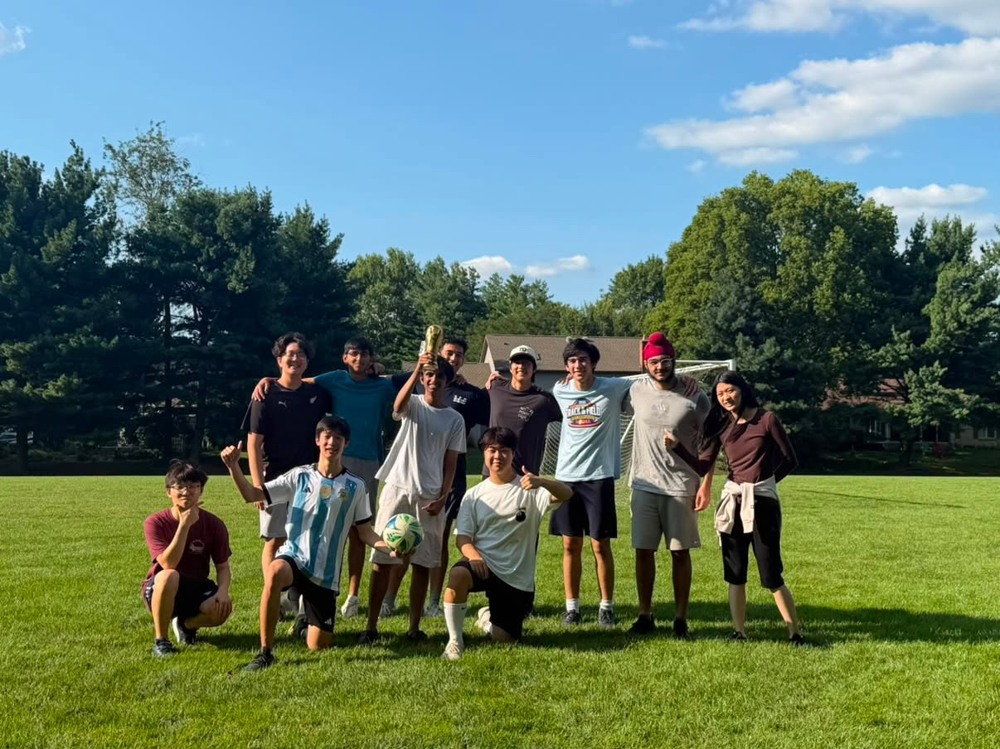
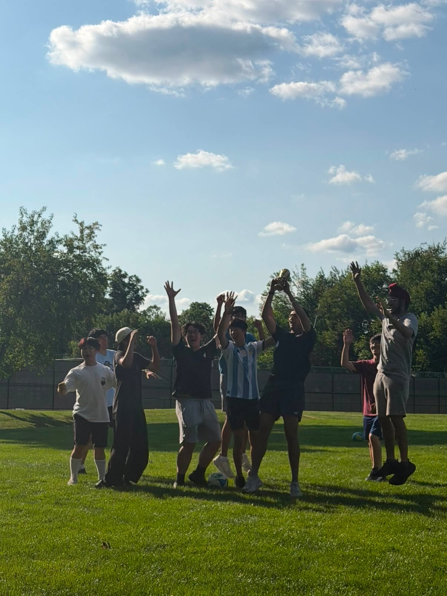
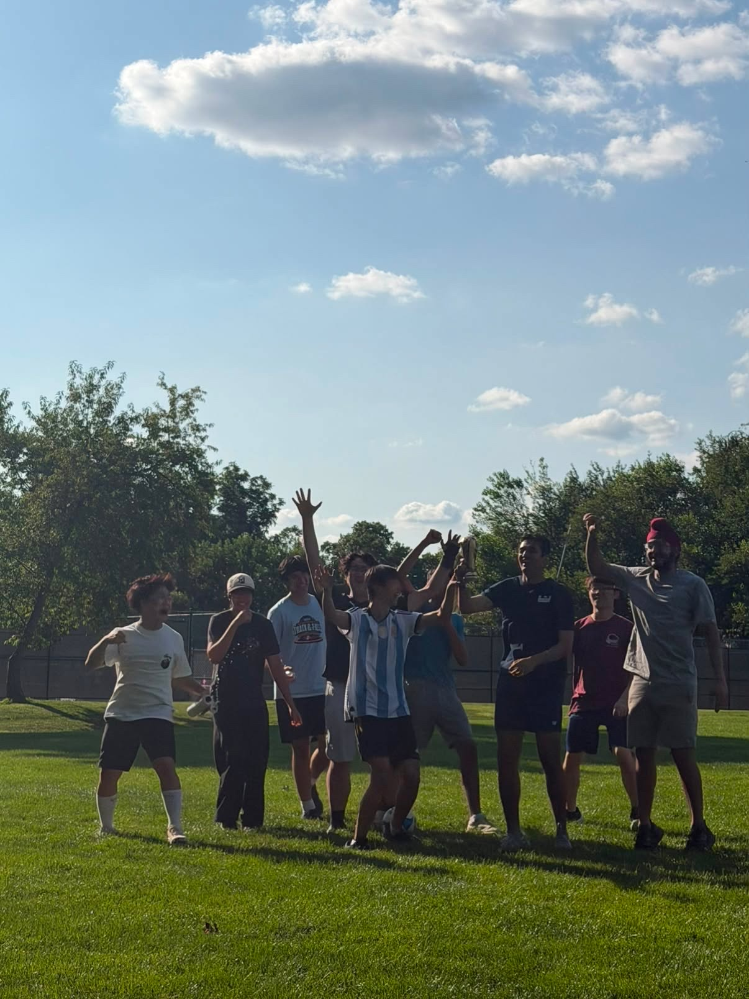
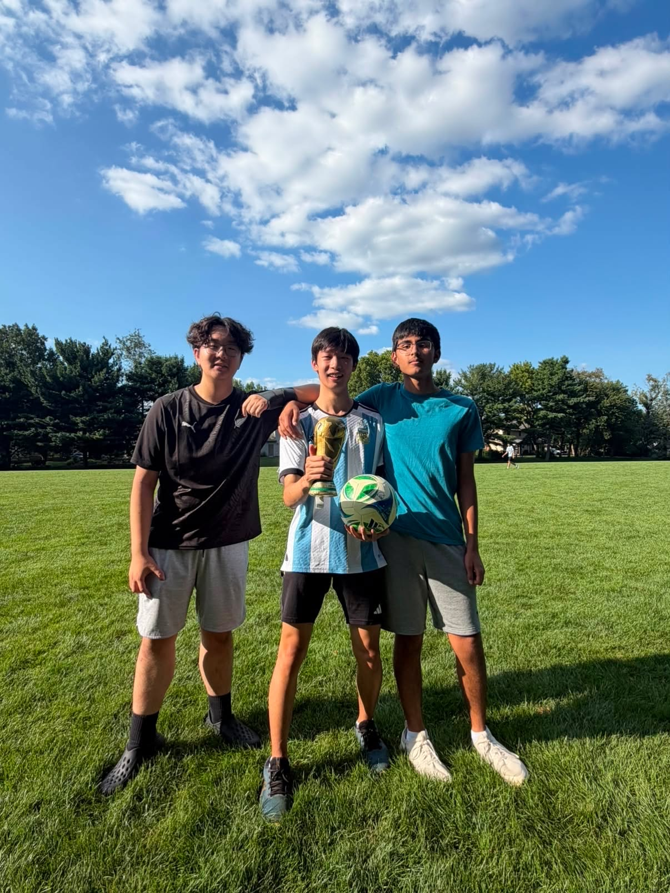

I’m a watcher more than a player now, but it didn’t start that way. I actually played as a kid, from about five until nine, right up until I hit the wall every young athlete eventually does: there wasn’t enough time for everything, and I had to choose. Swimming won out. What surprised me is that hanging up the cleats didn’t change how much I loved the game one bit — if anything, stepping off the pitch just made me a fan for good. The teams I picked and the players I loved never went anywhere.
So now it’s the sport I’ll rearrange a whole day around — I’ll find the stream, know the lineups, and have loud opinions about the substitutions. I grew up watching the best in the world and wishing I could do a fraction of what they do.
Mostly I grew up watching Messi. I’m an unapologetic Messi guy — I think he’s the greatest to ever play it, and I got to watch him do it in real time, which I try not to take for granted. It’s the way he seems to see the pitch three seconds before everyone else, the way the impossible things look almost boring when he does them. When Argentina finally won the 2022 World Cup and he lifted the trophy, it felt like the sport settling a debt it owed him.
That’s where my teams come from. Barcelona, for the Messi years and the football they played. Argentina, obviously. And Manchester City — which makes more sense than it sounds, because Pep Guardiola built both the Barca side I fell in love with and the City side I watch now. Follow the ideas and you end up following the same man across a decade and two countries.
I still get on a pitch every now and then, just for fun. And this past summer at the Ross program, I turned that into something bigger: I organized the first-ever Ross World Cup.
The idea was simple. Take a math camp full of people who’d otherwise spend the evening buried in problem sets, sort everyone into national teams, and run a real tournament with a bracket and a trophy. Getting a crowd of number theorists onto a pitch and into some kind of order was its own sort of proof — and it worked. It turned into one of the best parts of the summer, and I’m quietly proud that it started with me.




So I’m a fan who occasionally plays and, once in a while, organizes. The watching is the real love — ninety minutes where anything can happen, played by people working right at the edge of what’s possible. Running my own tiny version of it, on a pitch in Ohio with friends and a cheap trophy, only made me love the game more.